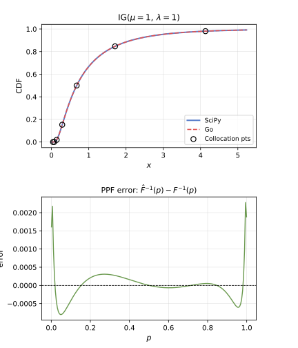
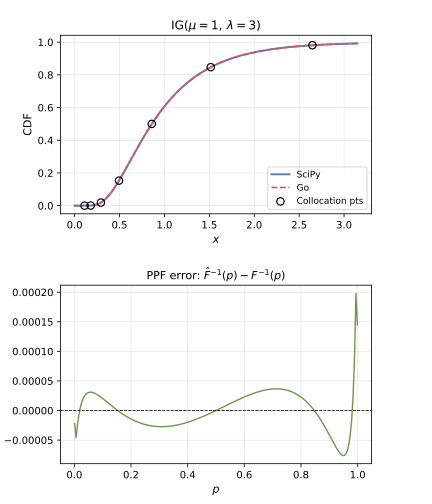
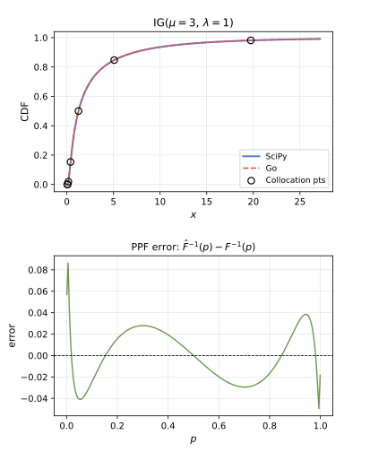
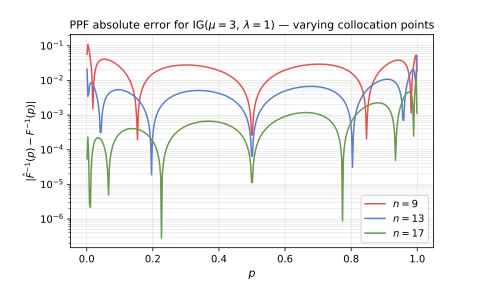

Suppose you want to sample a normal distribution, and are only able to produce uniform variates. How can you do it? One option is to use the Box--Müller method: sample two uniform variates $(u,v)$ and set $$(x,y) = \left(\sqrt{-2\log u} \cos(2\pi v), \sqrt{-2\log u} \sin(2\pi v)\right).$$ Then $(x,y)$ is 2-dimensional standard normal, and $x$ is a standard Gaussian distribution. You could also sample a single uniform $u$ and use an efficient and accurate implementation of $\Phi^{-1}(u)$, the percentage point function (PPF) of the standard normal distribution. But what about more complex distributions? For example, sampling a non-central $\chi$-squared distribution requires inverting a cumulative distribution function (CDF) defined by a convergent infinite series. For a handful of computations, this is fine. For a few millions, it is infeasible. This paper proposes a smarter way to do it: sample the expensive PPF $\Psi^{-1}(\Phi(x))$ at finitely many strategically chosen normal deviates $x_1,\ldots,x_n \in\mathbb R$, and call the outputs $y_1,\ldots,y_n$. Then, use a family of functions $L_1(x),\ldots,L_n(x)$ such that $L_i(x_j) = \delta_{ij}$ and replace $g(x) = \Psi^{-1}(\Phi(x))$ by $$\hat{g}(x) = \sum_{i=1}^n y_i L_i(x) .$$
The inverse Gaussian (IG) distribution has positive parameters $\mu$ and $\lambda$ and arises naturally as the distribution of the first-passage time of a Brownian motion with drift. Concretely, if $W_t$ is a standard Brownian motion and $\nu, a$ are positive constants, then the hitting time $\tau = \inf\{t \ge 0 : \nu t + W_t = a\}$ follows an IG distribution with $\mu = a/\nu$ and $\lambda = a^2$.
Its probability density function is $$f(x;\mu,\lambda) = \sqrt{\frac{\lambda}{2\pi x^3}}\exp\!\left(-\frac{\lambda(x-\mu)^2}{2\mu^2 x}\right), \quad \text{for positive } x,$$ and its cumulative distribution function admits the closed form $$F(x;\mu,\lambda) = \Phi\!\left(\sqrt{\frac{\lambda}{x}}\left(\frac{x}{\mu}-1\right)\right) + e^{2\lambda/\mu}\,\Phi\!\left(-\sqrt{\frac{\lambda}{x}}\left(\frac{x}{\mu}+1\right)\right),$$ where $\Phi$ denotes the standard normal CDF. Although the CDF is available in closed form, inverting it is not straightforward. Indeed, decomposing each argument as $\sqrt{\lambda/x} = v/2$ and $\sqrt{\lambda x}/\mu = k/v$ (which is consistent precisely when $k = 2\lambda/\mu$), the two $\Phi$-arguments become $k/v + v/2$ and $k/v - v/2$, and we recognise $$1 - F(x;\mu,\lambda) = f^{-1}\,\mathrm{Call}(f,K,v),$$ the Black--Scholes call price (divided by the forward $f$) with log-moneyness $k = \log(K/f)$ and total volatility $v$. Inverting the IG CDF at a given probability level is therefore exactly as hard as finding the implied volatility of a call option!
Let us test how well this performs for some values of $\mu$ and $\lambda$. I implemented the algorithm in the paper in Go and compared the output with what SciPy returns. The results are quite decent using 9 collocation points:



Finally, let us check how the error behaves as we produce more collocation points:
